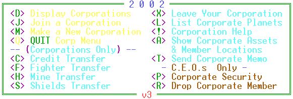

|
Corporate
Command Menu |
|

 Citadel
Command Menu
Citadel
Command Menu
|
Navigation
Console
|
Exit
Help
|
 Corporate
Commands
Corporate
Commands
<D>
Display Corporations
If you want to see
how you and your corporation compare with others in the game or if you
want to see who the members are of a specific corporation, use this selection.
You will asked if you want to List Corporations or Rank Corporations.
L will give you a listing of all corporations registered at Federation
Hall showing the corporation's registration number and the date of incorporation
and all corporate members with the C.E.O. labeled. R will display
a list of all corporations ranked by experience. The list shows the
rank, the corporate registration number and name, the C.E.O.'s name, the
corporate alignment and the corporate experience.
<J>
Join a Corporation
When you want to join
forces with a corporation of the other traders, you will need to make arrangements
to get your corporate security pass. When a member of that corporation
has approved your membership, use this option to join. You will need
to be of the same alignment as the C.E.O. If at any time during your
tenure with the corporation, your alignment is opposite that of the Chairman,
you will be automatically ousted from the Corporation.
<M>
Make a New Corporation
When you are prepared
to make the move from independent trader to Corporate C.E.O., this option
will file your Corporate Charter in the Federation's Hall of Records.
As C.E.O. you will have privileges that other players don't have such as
owning a Corporate Flagship and sending Corporate Memos to all members
of your Corporation. You will be the one to determine whether your
Corporation is good or evil. As you go, so goes the Corporation.
A prospective member will have to be of the same alignment as you to join.
<!>
Corporation Help
Display the portion
of the documentation describing the Corporation functions.
<Q>
QUIT Corporation Menu
Corporations
Only
<C>
Credit Transfer
Use this option to
transfer credits to or from your corporate associate. You have to
be in the same sector as the corporation member with whom you want to exchange
credits.
<F>
Fighter Transfer
Use this option to
transfer fighters to or from your corporate associate. You have to
be in the same sector as the corporation member with whom you want to exchange
fighters.
<H>
Mines Transfer
Use this option to
transfer mines to or from your corporate associate. You have to be
in the same sector as the corporation member with whom you want to exchange
mines.
<S>
Shields Transfer
Use this option to
transfer shields to or from your corporate associate. You have to
be in the same sector as the corporation member with whom you want to exchange
shields.
<X>
Leave Your Corporation
There may come a time
when you feel you have to make a break with your current corporation.
You may want to form your own new corporation. You may want to play
the game with an alignment different from that of your corporation's members.
This will allow you to vacate your position in your corporation.
Remember that you will no longer have access to any of the corporation's
assets. If you are the C.E.O. the corporation will be dissolved and
all corporate fighters will become rogue mercenaries.
<L>
List Corporate Planets
This will display
a detailed graph of your corporation's planets. The information includes
-the sector where
the planet is located
-the planet's name
-the current population
-the production rate
for Fuel Ore, Organics and Equipment
-the current inventories
of the commodities
-the number of fighters
stationed there
-the level of the
Citadel (if any)
-the number of shields
(if any)
-the amount of credits
in the Citadel (if any)
<A>
Show corporate Assets and Member Locations
This is a very handy
tool to use in organizing your strategy with that of the others in your
Corporation. The information shown on this display is
-the Corporation member's
name
-the sector where
that member is located
-whether or not the
member is on a planet in that sector
-the number of fighters,
shields, mines and credits on him/her
<T>
Send Corporate Memo
When you want to give
information to all those in your organization, use this option. Whether
it is instructions on where you want to establish a new colony or a congratulatory
dispatch for a job well done, you can send your message quickly and efficiently.
C.E.O.'s
Only
<P>
Corporate Security
In a world where instances
of computer crime run rampant, a C.E.O. can never be too careful.
Be sure you trust a player before you let him or her in your organization.
And just as with your BBS account, you can better maintain security if
you change passwords occasionally.
<R>
Drop Corporate Member
Do you have a problem
with a member of your Corporation? Is that member showing signs of
insubordination? You don't have to put up with the stress.
Simply drop this trouble maker. Remember that the member can take
any corporate assets on his/her ship when kicked out.
|
Citadel
Command Menu
|
 Exit
Help
Exit
Help
|
Exit
Help
|